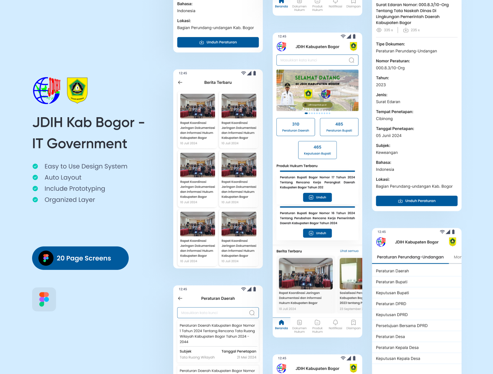

JDIH Kabupaten Bogor
Perkenalan
📚 Apa itu JDIH?
JDIH (Jaringan Dokumentasi dan Informasi Hukum) merupakan suatu sistem pendayagunaan bersama peraturan perundang-undangan dan bahan dokumentasi hukum lainnya secara tertib, terpadu dan berkesinambungan serta merupakan sarana pemberian pelayanan informasi hukum secara mudah, cepat dan akurat melalui website aplikasi JDIH.
🗂️ Latar Belakang Projek - JDIH Mobile App Design
Awalnya, sistem JDIH (Jaringan Dokumentasi dan Informasi Hukum) hanya tersedia dalam bentuk website yang digunakan untuk mengakses dan mengunduh berbagai produk hukum. Namun, tampilan dan fungsinya belum sepenuhnya optimal untuk perangkat mobile.

Melihat kebutuhan pengguna yang semakin mobile dan pentingnya akses hukum yang cepat, proyek ini bertujuan untuk mengembangkan versi mobile dari JDIH, dengan fokus pada pengalaman pengguna yang lebih sederhana, cepat, dan intuitif.
📱 Key Features in Mobile Version
- 1. Pencarian Dokumen Hukum: Pengguna dapat mencari dokumen hukum berdasarkan kata kunci tertentu
- 2. Baca Langsung: Dokumen dapat dibaca langsung dalam aplikasi tanpa perlu diunduh terlebih dahulu
- 3. Bookmark Dokumen: Fitur penyimpanan dokumen favorit untuk akses cepat di lain waktu
- 4. Unduh Dukumen: Pengguna dapat mengunduh dokumen hukum ke perangkat untuk dibuka secara offline
🯠Project Direction
Desain diarahkan agar tetap selaras dengan struktur konten dari versi website, namun disesuaikan dengan kebutuhan mobile:
- 1. Navigasi sederhana
- 2. Akses cepat ke dokumen hukum
- 3. Tampilan bersih dan fokus pada keterbacaan
- 4. Fungsionalitas yang mendukung efisiensi pengguna, terutama praktisi hukum dan masyarakat umum
Peran Saya
-

Merancang komponen UI menggunakan auto-layout, variabel, dan properti varian, teks, dll.
-

Menghubungkan variabel yang telah dibuat ke dalam komponen.
-

Menyusun design system Typography, Color dan lainnya secara terstruktur.
-

Membuat tampilan aplikasi dan menyerahkannya ke programmer untuk dikembangkan.
Alur Pengerjaan
🔠Benchmarking
Benchmarking dilakukan terhadap aplikasi JDIH dari berbagai instansi lain untuk mempelajari alur dan fitur yang sudah ada, sehingga perancangan dapat mengikuti standar umum dan memberikan pengalaman pengguna yang familiar dan mudah dipahami.
⚛️ Design System
Saya membangun Design System berbasis pendekatan Atomic Design System untuk memastikan konsistensi antarmuka. Pendekatan ini memungkinkan saya menyusun elemen UI mulai dari level terkecil seperti atoms (warna, tipografi, spacing), molecules (form input, button group), hingga organisms (form section, header).


Note : Hanya sebagian design system yg ditampilkan
💻 Result
Berikut hasil rancangan antarmukanya yang kemudian diserahkan kepada tim pengembang (programmer) sebagai acuan implementasi dan dilanjutkan ke tahap pengkodean.

Aplikasi ini telah selesai dikembangkan dan kini telah tersedia untuk diunduh melalui Play Store.
Pelajaran yang Didapat
Dari proyek ini, saya memperoleh beberapa wawasan berharga, antara lain:
- 1. Riset Mendalam: Benchmarking membantu memahami kebutuhan pengguna dan menciptakan solusi tepat
- 2. Desain Fleksibel: Variabel dan properti membuat komponen lebih adaptif dan efisien
- 3. Proses Terstruktur: Membagi tugas jadi langkah kecil membuat hasil lebih optimal